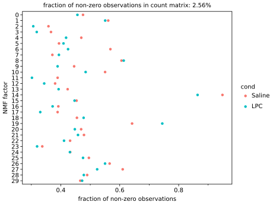
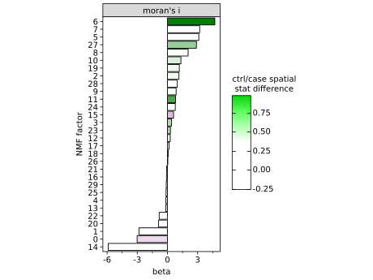
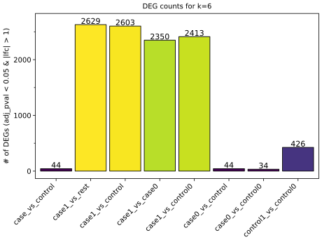
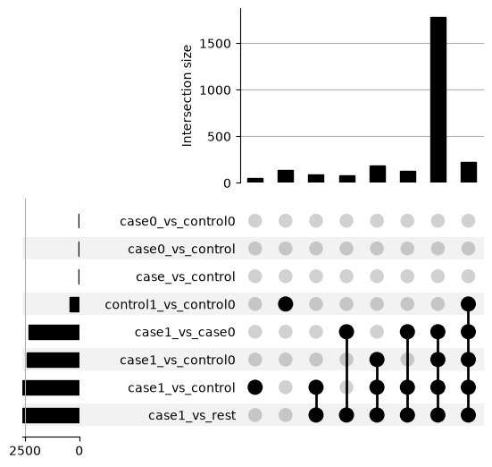

analysis of remyelination data#
we first import all script dependencies and load data into an AnnData object
AnnData object with n_obs × n_vars = 93450 × 12127
obs: 'Sample details', 'Animal', 'Timepoint', 'Condition', 'GoodQuality', 'n_counts', 'puck_id', 'puck_id_cond'
var: 'n_cells', 'SYMBOL'
obsm: 'X_nmf', 'spatial'
varm: 'X_nmf'
layers: 'counts', None (.X)
before proceeding with spatialPeeler, we inspect our count matrix and NMF factors to assess their sparsity
X_spars = rml.X.nnz / np.prod(rml.X.shape) # ty: ignore[missing-union-attribute]
(
comp_sparsity(rml.obsm["X_nmf"], cond=rml.obs["Condition"])
>> ggplot()
+ aes(x="density", y="column", color="cond")
+ geom_point()
+ scale_y_discrete(limits=reversed)
+ labs(
x="fraction of non-zero observations",
y="NMF factor",
title=f"fraction of non-zero observations in count matrix: {X_spars * 100:.02f}%",
)
).show()

we see that the dataset is overall quite sparse (only ~1% of the data is non zero)
and this is reflected in the factors, which are also mostly quite sparse
as such, we threshold our factor regression analysis to only include cells which are non-sparse for that factor
# run factor-wise regression step
for k in range(rml.obsm["X_nmf"].shape[1]):
sP.run_fact_reg(
rml,
"Condition",
"Saline",
k,
SP_FACT_PAT_STR.format(k=k),
X_key="X_nmf",
filt=lambda adata: adata[adata.obsm["X_nmf"][:, k] > 0, :], # noqa: B023
)
print(rml)
AnnData object with n_obs × n_vars = 93450 × 12127
obs: 'Sample details', 'Animal', 'Timepoint', 'Condition', 'GoodQuality', 'n_counts', 'puck_id', 'puck_id_cond'
var: 'n_cells', 'SYMBOL'
uns: 'sP_p_hat_k=0', 'sP_p_hat_k=1', 'sP_p_hat_k=2', 'sP_p_hat_k=3', 'sP_p_hat_k=4', 'sP_p_hat_k=5', 'sP_p_hat_k=6', 'sP_p_hat_k=7', 'sP_p_hat_k=8', 'sP_p_hat_k=9', 'sP_p_hat_k=10', 'sP_p_hat_k=11', 'sP_p_hat_k=12', 'sP_p_hat_k=13', 'sP_p_hat_k=14', 'sP_p_hat_k=15', 'sP_p_hat_k=16', 'sP_p_hat_k=17', 'sP_p_hat_k=18', 'sP_p_hat_k=19', 'sP_p_hat_k=20', 'sP_p_hat_k=21', 'sP_p_hat_k=22', 'sP_p_hat_k=23', 'sP_p_hat_k=24', 'sP_p_hat_k=25', 'sP_p_hat_k=26', 'sP_p_hat_k=27', 'sP_p_hat_k=28', 'sP_p_hat_k=29'
obsm: 'X_nmf', 'spatial', 'sP_p_hat_k=0', 'sP_p_hat_k=1', 'sP_p_hat_k=2', 'sP_p_hat_k=3', 'sP_p_hat_k=4', 'sP_p_hat_k=5', 'sP_p_hat_k=6', 'sP_p_hat_k=7', 'sP_p_hat_k=8', 'sP_p_hat_k=9', 'sP_p_hat_k=10', 'sP_p_hat_k=11', 'sP_p_hat_k=12', 'sP_p_hat_k=13', 'sP_p_hat_k=14', 'sP_p_hat_k=15', 'sP_p_hat_k=16', 'sP_p_hat_k=17', 'sP_p_hat_k=18', 'sP_p_hat_k=19', 'sP_p_hat_k=20', 'sP_p_hat_k=21', 'sP_p_hat_k=22', 'sP_p_hat_k=23', 'sP_p_hat_k=24', 'sP_p_hat_k=25', 'sP_p_hat_k=26', 'sP_p_hat_k=27', 'sP_p_hat_k=28', 'sP_p_hat_k=29'
varm: 'X_nmf'
layers: 'counts', None (.X)
we now assess our resulting regression outputs distributions
we can extract and collate the model betas and other statistics using the sweep_uns function,
and compute spatial statistics using the comp_spat_stats function.
we can then use these outputs to plot the difference in mean Moran’s I statistic between case and control samples:
beta_df = sweep_uns(rml, SP_FACT_PAT_STR)
beta_df["k"] = beta_df["k"].astype(int)
sp_stat_df = comp_spat_stats(rml, SP_FACT_PAT_STR, "puck_id")
(
pl_spat_stats(beta_df, sp_stat_df[sp_stat_df["stat"] == "moran's i"], rml.obs, "puck_id", "Condition", "Saline")
+ theme(aspect_ratio=2)
).show()

we can see that factor 6 has a strong difference case-specific profile and shows interesting spatial properties between conditions as measured by Moran’s I statistic, so we plot it’s distributions below:
k = 6
for p in pl_help(rml[rml.obsm["X_nmf"][:, k] > 0, :], k).values():
p.show()


to explore this further, we proceed w/ a gene-wise analysis for factor 6:
ks_oi = [6]
for k in ks_oi:
sP.run_gene_reg(rml, SP_FACT_PAT_STR.format(k=k), SP_GENE_PAT_STR.format(k=k), layer="counts", run_reg=False)
for k in ks_oi:
(
uapl.plotfeats(rml)
+ aes(
x=uapl.varm("X_nmf", k),
y=uapl.varm(SP_GENE_PAT_STR.format(k=k), "corr"),
label=np.where(
np.argsort(np.argsort(-np.abs(np.asarray(rml.varm[SP_GENE_PAT_STR.format(k=k)]["corr"])))) < 8,
rml.var["SYMBOL"],
None,
),
)
+ geom_point(size=1.5, shape="o", stroke=0)
+ geom_label(adjust_text={}, na_rm=True)
+ labs(
colour="-log(pval)",
x=f"NMF[{k}]",
y="pearson correlation",
title=f"NMF loading / p\u0302-gene correlation relationship for k={k}",
)
).show()

degs = {k: run_deg_groups(rml, k, "Condition", "Saline") for k in ks_oi}
sig_sub = {k: degs[k].loc[lambda e: (e["adj_pval"] < 0.05) & (e["lfc"].abs() > 1)] for k in ks_oi}
for k in ks_oi:
sig_counts = sig_sub[k].groupby("cmp", observed=True)["gene"].count()
(
ggplot(sig_counts.reset_index(drop=False))
+ aes(x="cmp", y="gene", fill=after_stat("y"), label=after_stat("y"))
+ geom_col(color="black")
+ geom_text(nudge_y=sig_counts.max() * 0.025)
+ theme(axis_text_x=element_text(angle=45, hjust=1))
+ guides(fill="none")
+ labs(x="", y="# of DEGs (adj_pval < 0.05 & |lfc| > 1)", title=f"DEG counts for k={k}")
).show()

we can further visualize the permutations of gene set size in these comparisons via the upsetplot package:
for k in ks_oi:
with catch_warnings():
simplefilter(action="ignore", category=FutureWarning)
up.UpSet(
up.from_contents({g: v.array for g, v in sig_sub[k].groupby("cmp", observed=True)["gene"]}),
subset_size="count",
max_subset_rank=8,
).plot()
plt.show()
